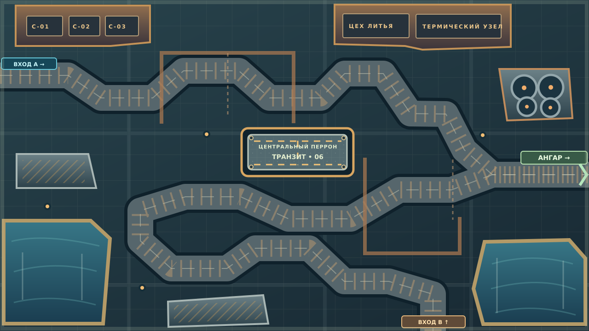

Мир 1280×720. Круг = 28 px корпуса, анализатор дополнительно проверяет 8 px зазора. Игра рисует реальные маршруты и существ в Canvas поверх этой подложки.
Два входа, общий восточный выход, сильный центральный перегрузочный перрон

Мир 1280×720. Круг = 28 px корпуса, анализатор дополнительно проверяет 8 px зазора. Игра рисует реальные маршруты и существ в Canvas поверх этой подложки.